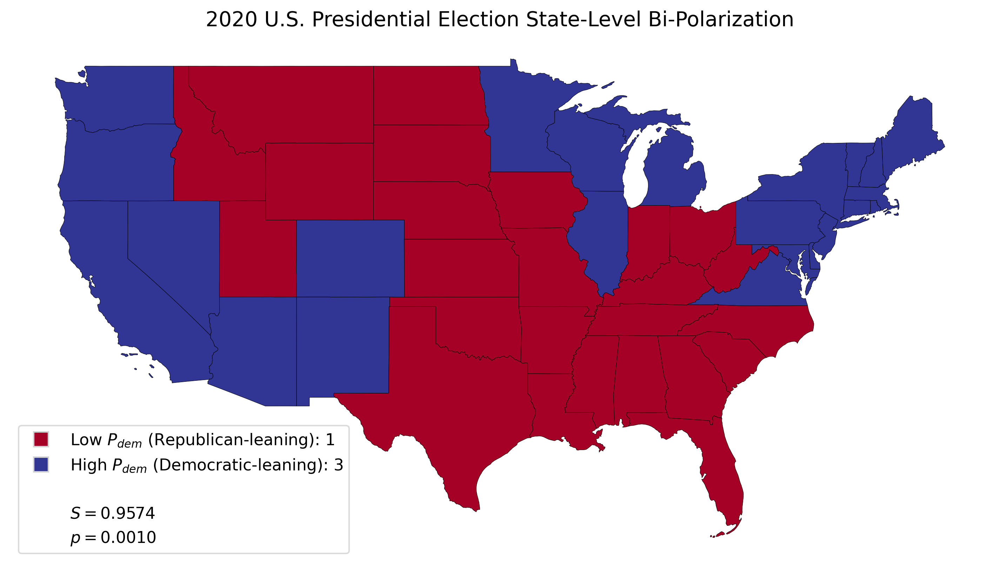
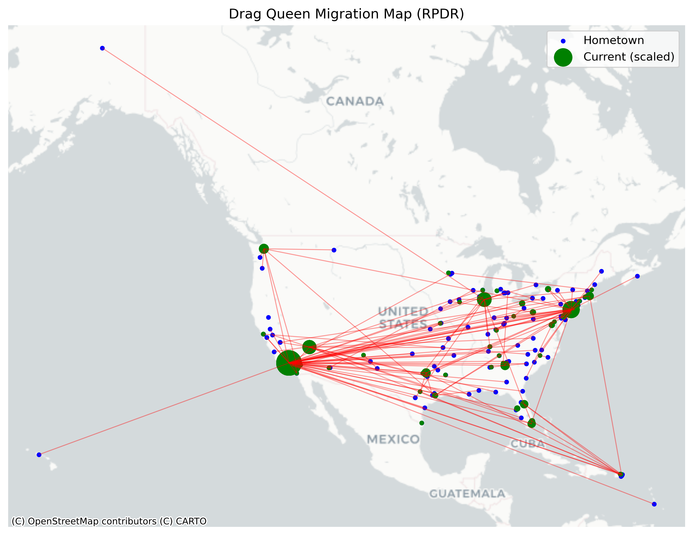
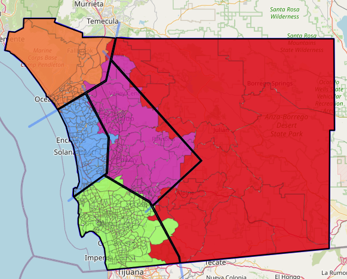

Selected mapping tools, open-source web apps, and geographic data research exploring how we shape our political landscapes.

Master's thesis examining election outcomes using spatial statistics. This research applies spatial interpolation and the S-statistic to measure partisan clustering across multiple geographic scales.

A dynamic spatial analysis tracking the geographic movements and career trajectories of performers, exploring how cultural labor, regional scenes, and mobility intersect within queer performance networks.

An interactive web-mapping tool that lets everyday people design and test local San Diego voting districts. It features live statistics, smart line-validation rules, and an open platform built for citizen science and public engagement.